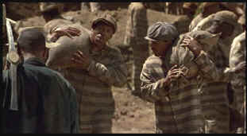

|
Life(SE)/C,A |
|
Universal/1999/109m/ANA
1.85 |
Life
is one strange movie looking for its own meaning. Does Life mean to
be a comedy? There are some funny bits, but they are few and far between
and seldom come from any expected places. Life plays lightweight
serious, in fact. Yet, the story develops virtually no pathos. There’s
some minor nastiness, a few scenes that owe a big debt to other chain gang
movies like Cool Hand Luke, but despite some appealing
performances, I kept asking myself “What’s Life all about.
 |
|
The heavy load is carried by
Murphy and Lawrence ©Universal |
When
hustler Ray Gibson picks the pocket of middle class hopeful Claude Banks
in a nightclub, they take a major detour in their lives. On a bootlegging
trip to the South, they are framed for a murder and wind up the rest of
the movie imprisoned on at Mississippi State Prison Southern chain gang.
How they deal with their common fate is what Life is all about.
It never seems to rain in Life. A strange
sunshine pervades the movie, despite some brutality and several deaths.
There is one remarkable sequence that could have been the centerpiece
around which an entire movie could have been built. Gibson regales the
other prisoners with his fantasy of Ray Gibson’s Boom Boom Room, a
Harlem nightclub exiting only in his imagination and dreams. As the
inmates listen to Gibson’s glib delivery of would-be delights, they are
transported into this world. Deft editing mixes the prisoners in dismal
uniforms listening to Gibson and in formal wear at the Boom Boom Room.
There’s more life packed into this all too short sequence than in any
other aspect of the movie. Unfortunately, Life fails to move me
past an occasional laugh and the boredom of everyday existence without any
real drama.
Ted Demme directs Eddie Murphy as Ray and Martin
Lawrence as Claude with a slick lens and a minimum of story. The
performances are really quite good, but like the film, they veer from
drama to comedy like bumper cars at an amusement park. Eddie Murphy has
done other incarnations of Ray Gibson before. He’s the hip city guy
armed with a ready wisecrack and a determination that belies his
situation. Martin Lawrence is totally unpredictable. You are never sure
whether you are about to laugh or cringe. Nick Cassavetes is a strong
presence as the prison boss man.
Colorful images are superbly detailed in Life
on DVD. The bright transfer has excellent contrast. Every lighting
situation comes through with flying colors. Whether the gloss of the Boom
Boom Room sequence or the night scenes in the prison bunks, this transfer
sparkles. The images are seamless enough to make you forget you are
watching a video. The music is outstanding in Life and the Dolby Digital
5:1sound does the DVD more justice than the Mississippi legal system
affords Ray and Claude. It’s clean and airy with lots of snap and has
excellent bass impact. Ted Demme delivers a blithely enjoyable audio
commentary. It sounds like Demme is going to give an irreverent and
hilarious commentary, however, he is simple and direct in describing the
mechanics of Life and pointing out the landscape of actors on the
periphery. Demme acknowledges that the makers of Life attempted to walk an
ever-changing tightrope between comedy and drama. He makes frequent
comparison to Hogan’s Heroes as inspiration. He gives credit to
Terry Gilliam and Dennis Potter’s The Singing Detective for
inspiring the stylistic treatment of the fine fantasy sequence. Demme
points out where the actor takes off in improvisation and script.
There are some excellent
|
|